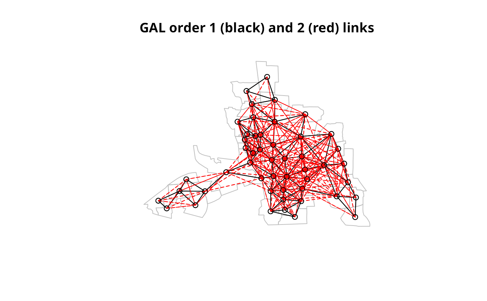

nblag.RdThe function creates higher order neighbour lists, where higher order neighbours are only lags links from each other on the graph described by the input neighbours list. It will refuse to lag neighbours lists with the attribute self.included set to TRUE. nblag_cumul cumulates neighbour lists to a single neighbour list (“nb” object).
nblag(neighbours, maxlag)
nblag_cumul(nblags)input neighbours list of class nb
the maximum lag to be constructed
a list of neighbour lists as output by nblag
returns a list of lagged neighbours lists each with class nb
columbus <- st_read(system.file("shapes/columbus.shp", package="spData")[1], quiet=TRUE)
col.gal.nb <- read.gal(system.file("weights/columbus.gal", package="spData")[1])
coords <- coordinates(as(columbus, "Spatial"))
summary(col.gal.nb, coords)
#> Neighbour list object:
#> Number of regions: 49
#> Number of nonzero links: 230
#> Percentage nonzero weights: 9.579342
#> Average number of links: 4.693878
#> Link number distribution:
#>
#> 2 3 4 5 6 7 8 9 10
#> 7 7 13 4 9 6 1 1 1
#> 7 least connected regions:
#> 1 6 31 39 42 46 47 with 2 links
#> 1 most connected region:
#> 20 with 10 links
#> Summary of link distances:
#> Min. 1st Qu. Median Mean 3rd Qu. Max.
#> 0.1276 0.3613 0.4566 0.4694 0.5536 0.8924
#>
#> The decimal point is 1 digit(s) to the left of the |
#>
#> 1 | 3344
#> 1 | 99
#> 2 | 000011333344
#> 2 | 556677779999
#> 3 | 000011222222223344444444
#> 3 | 556666777777888888889999999999
#> 4 | 00001111112233333333334444
#> 4 | 55666666666666777777777788888899
#> 5 | 0011112222222222222233334444
#> 5 | 556666667788
#> 6 | 000000112244
#> 6 | 5577889999
#> 7 | 11112244
#> 7 | 557777
#> 8 | 1144
#> 8 | 55999999
#>
col.lags <- nblag(col.gal.nb, 2)
print(col.lags)
#> [[1]]
#> Neighbour list object:
#> Number of regions: 49
#> Number of nonzero links: 230
#> Percentage nonzero weights: 9.579342
#> Average number of links: 4.693878
#>
#> [[2]]
#> Neighbour list object:
#> Number of regions: 49
#> Number of nonzero links: 406
#> Percentage nonzero weights: 16.90962
#> Average number of links: 8.285714
#>
#> attr(,"call")
#> nblag(neighbours = col.gal.nb, maxlag = 2)
summary(col.lags[[2]], coords)
#> Neighbour list object:
#> Number of regions: 49
#> Number of nonzero links: 406
#> Percentage nonzero weights: 16.90962
#> Average number of links: 8.285714
#> Link number distribution:
#>
#> 1 2 3 4 5 6 7 8 9 10 11 12 13 14 15 16 17
#> 1 2 5 4 2 3 5 4 2 3 7 3 4 1 1 1 1
#> 1 least connected region:
#> 36 with 1 link
#> 1 most connected region:
#> 25 with 17 links
#> Summary of link distances:
#> Min. 1st Qu. Median Mean 3rd Qu. Max.
#> 0.3209 0.7126 0.8481 0.9023 1.0860 1.6743
#>
#> The decimal point is 1 digit(s) to the left of the |
#>
#> 3 | 2233557799
#> 4 | 1166777788888888
#> 5 | 0011224455555566666688889999
#> 6 | 11113333334455556666666666889999999999
#> 7 | 00000011112222222233334444444455555555556666667777777777777777889999
#> 8 | 000011111111222222222233333344444444445555555555666666999999
#> 9 | 001111222222222233444444555555556666667777778899
#> 10 | 0000002222223333333344666666777788889999
#> 11 | 00112233334444555566777788
#> 12 | 1122223333555566667777888888889999
#> 13 | 0000001166668899
#> 14 | 002244558888
#> 15 | 00667788
#> 16 | 77
#>
plot(st_geometry(columbus), border="grey")
plot(col.gal.nb, coords, add=TRUE)
title(main="GAL order 1 (black) and 2 (red) links")
plot(col.lags[[2]], coords, add=TRUE, col="red", lty=2)

cuml <- nblag_cumul(col.lags)
cuml
#> Neighbour list object:
#> Number of regions: 49
#> Number of nonzero links: 636
#> Percentage nonzero weights: 26.48896
#> Average number of links: 12.97959
run <- FALSE
if (require(igraph, quietly=TRUE) && require(spatialreg, quietly=TRUE)) run <- TRUE
if (run) {
W <- as(nb2listw(col.gal.nb), "CsparseMatrix")
G <- graph.adjacency(W, mode="directed", weight="W")
D <- diameter(G)
nbs <- nblag(col.gal.nb, maxlag=D)
n <- length(col.gal.nb)
lmat <- lapply(nbs, nb2mat, style="B", zero.policy=TRUE)
mat <- matrix(0, n, n)
for (i in seq(along=lmat)) mat = mat + i*lmat[[i]]
G2 <- shortest.paths(G)
print(all.equal(G2, mat, check.attributes=FALSE))
}
#> [1] TRUE